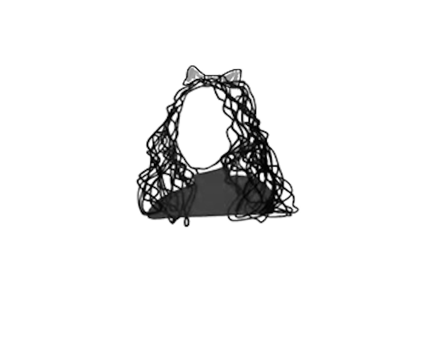

I build & design that make system adapts.
I'm a designer-builder at Carnegie Mellon's Human-Computer Interaction Institute. I came up through art and media before I learned to ship — so I move easily between a sketch and a working prototype, and I'm happiest turning ambiguous human problems into AI-native products people can actually use.
Before CMU I taught high school and worked across psychology and media art. That path means I think about products from the learner's side first — how people struggle, understand, and decide — and then build for it: validated analysis pipelines, functional AI-product prototypes, and the occasional piece of hardware.
Have an idea, a role, or a problem worth building for? Say hello ↗